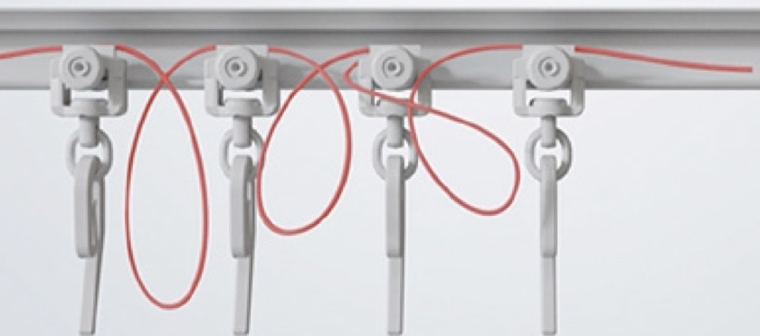
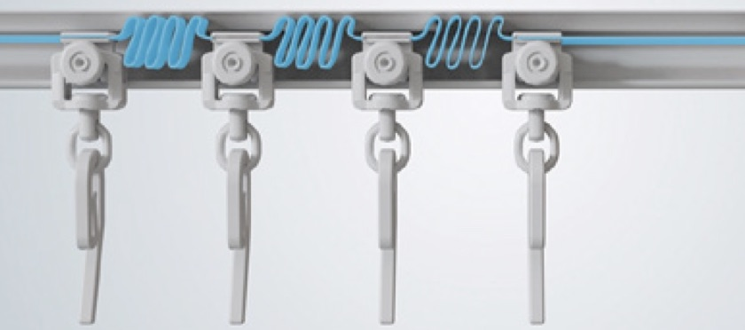

Smart Wave · invenție patentată TOSO
Valuri perfect egale, fără sfori.
Banda Pitch Keep ține distanța dintre cărucioare și se pliază ca o armonică în interiorul șinei.

Sisteme clasice. Sfoara care ține distanța dintre cărucioare iese din șină, se vede și se încurcă.

Smart Wave. Banda rămâne ascunsă în șină, iar valurile sunt identice, la fiecare deschidere.
Unde se folosește
| Nexty | Da, ca accesoriu la comandă |
|---|---|
| COMO 20 și COMO 20 Signature | Da, ca opțiune |